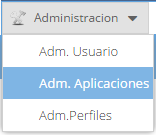
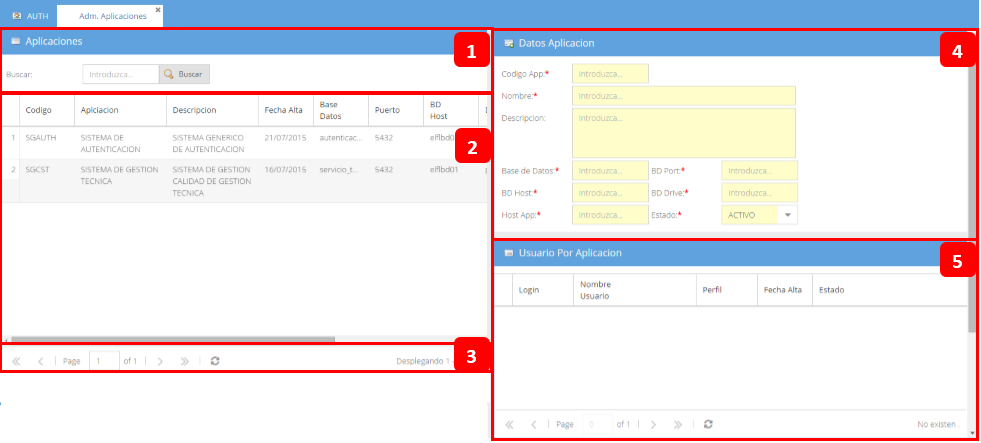

Se ingresa mediante:

Posee las siguientes secciones:

1: Sección de busqueda, donde se introducen los criterios para realizar busqueda en el contenido del grid.
2: Sección del grid, donde se muestran todas las aplicaciones existentes en la Base de Datos, con la opciones:
 Ordenar de forma ASC el grid de acuerdo a este campo seleccionado.
Ordenar de forma ASC el grid de acuerdo a este campo seleccionado.
 Ordenar de forma DESC el grid de acuerdo a este campo seleccionado.
Ordenar de forma DESC el grid de acuerdo a este campo seleccionado.
3: Paginacion del grid.
4: Formulario de aplicaciones, donde se visualizan mas detalles de la aplicacion. (Campos con asterisco son obligatorios)
5: Grid relacion usuario con las aplicaciones, se visualiza de acuerdo a la aplicacion seleccionada los usuarios que tienen acceso.
Created with the Personal Edition of HelpNDoc: Free Kindle producer